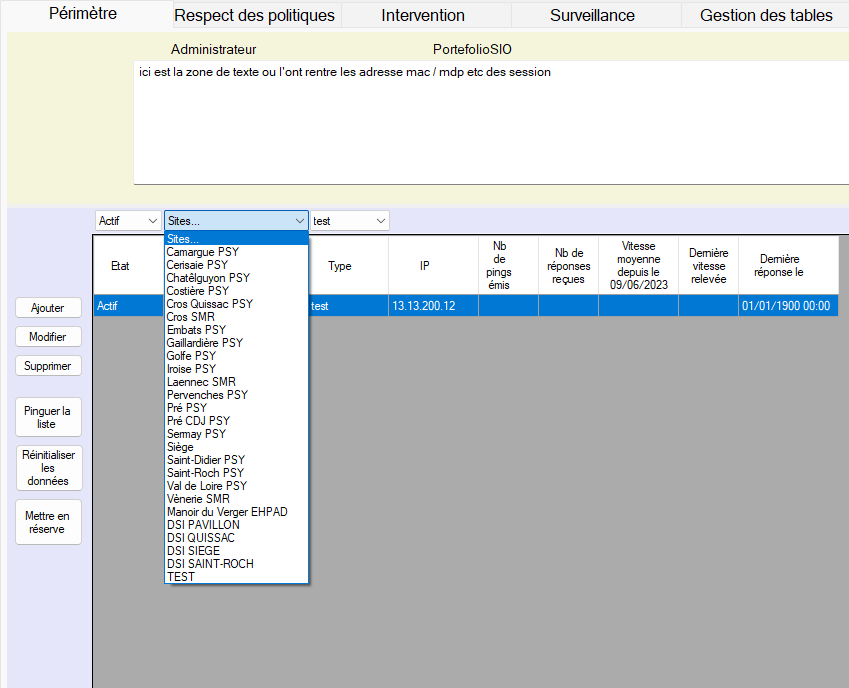
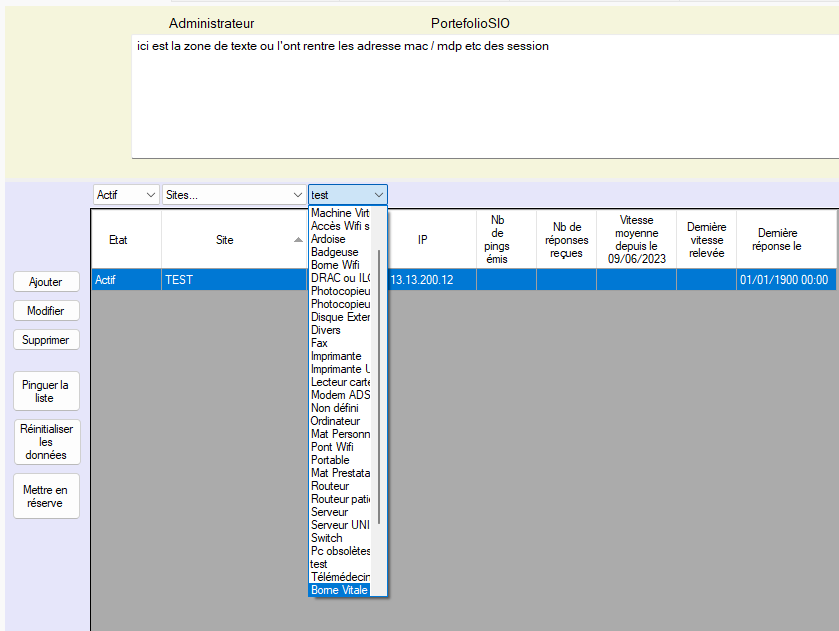
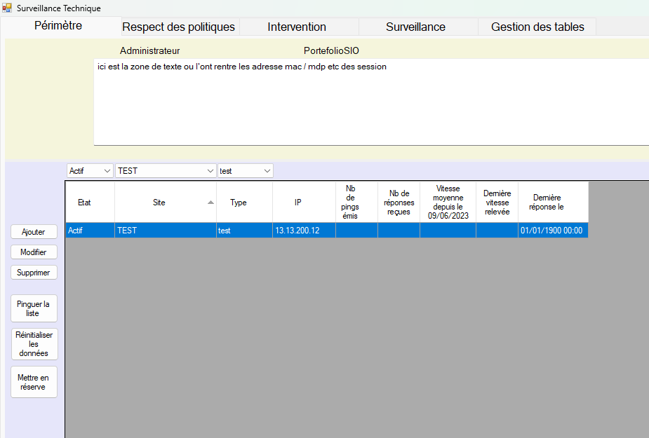

Préparation et configuration des postes
Préparation des postes en sélectionnant puis en exécutant, selon le site, les scripts BAT écrits par mon administrateur réseau.
Passionné par l'infrastructure réseau, la virtualisation et la cybersécurité, j'assure le support technique, l'administration Active Directory et le réseau sur un groupe hospitalier de 17 cliniques à Marseille.
Technologies et outils maîtrisés dans le domaine des systèmes et réseaux informatiques
Réseaux
Configuration et maintenance
Sécurité
Firewall et VPN
Systèmes
Gestion d'identités
Virtualisation
Hyperviseur open-source
OS
Administration système
Réseaux
Segmentation réseau
Découvrez le parcours BTS Services Informatiques aux Organisations
Déploiement automatisé en entreprise (script .bat) & laboratoire réseau BTS
Sauvegardes immuables face aux rançongiciels, et transposition de la directive NIS 2 par la loi Résilience
Clinique Montfleuri (17 sites) & Logiciel ST
Compétences officielles BTS SIO SISR
Proxmox, pfSense, switch 802.1Q, FOG, Kali, UniFi et XiVO
Étudiant passionné par l'administration des systèmes, les réseaux d'entreprise et la cybersécurité.
Alternant BTS SIO SISR • Marseille
Actuellement en 2ème année de BTS SIO option SISR (Solutions d'Infrastructure, Systèmes et Réseaux), je me spécialise dans la conception d'architectures réseau sécurisées, l'administration système et la gestion de la haute disponibilité.
Mon parcours en alternance m'a permis d'acquérir une rigueur opérationnelle forte face à des exigences concrètes de production : segmentation réseau par VLANs, gestion des droits Active Directory, automatisation de déploiement par scripts et conformité de sécurité.
Curieux, méthodique et passionné par les enjeux de défense des systèmes d'information, mon objectif après l'obtention du BTS est de poursuivre vers une formation d'Expert en Cybersécurité afin d'évoluer vers les fonctions d'Ingénieur Sécurité puis de Responsable de la Sécurité des Systèmes d'Information (RSSI).
Technologies et protocoles maîtrisés durant mon parcours
Adressage IPv4, segmentation VLANs 802.1Q, routage inter-VLAN, pare-feu pfSense/OPNsense, switchs managés Cisco & Netgear.
Windows Server 2022, Active Directory (AD DS), Stratégies de groupe (GPO), DHCP, DNS, Linux Debian/Ubuntu Server.
Hyperviseur Proxmox VE (Pools RBAC, Bridges vmbr), VMware ESXi, conteneurs LXC, auto-hébergement HomeLab complet.
Ticketing Jira & GLPI, outil interne de Surveillance Technique (ST) multisite, scripts batch d'automatisation PC.
Présentation de la Clinique Montfleuri Saint Roch, de notre groupe de 17 établissements et de nos outils métiers internes.
Établissement médical et de soins psychiatriques situé dans le 11e arrondissement de Marseille, la Clinique Montfleuri Saint Roch fait partie intégrante d'un réseau de 17 cliniques et établissements de santé.
En environnement hospitalier, l'informatique est un élément vital : la disponibilité du réseau conditionne l'accès en temps réel aux dossiers patients informatisés (DPI), aux ordonnances médicales et à la continuité des soins 24h/24 et 7j/7.
Strict respect de la confidentialité des données de santé, gestion des accès par le principe de moindre privilège sur Active Directory et cloisonnement étanche par VLANs.
Contrôle de l'outil interne centralisant les 17 cliniques : vérification des adresses IP, MAC et postes offline.
Traitement des demandes soignantes : déblocages Active Directory, sessions TSE et imprimantes ordonnances.
Configuration de PC Windows 10/11 via nos scripts .bat, jonction au domaine AD et attribution des GPO.
Brassage en baie réseau, diagnostic de ports sur switchs managés et vérification des VLANs soignants vs admin.
Rédaction de fiches procédures, clôture des tickets résolus et optimisation de nos scripts .bat de déploiement automatique.
Développé sur-mesure pour notre DSI, cet outil centralise le parc des 17 cliniques du groupe et permet de monitorer en temps réel les adresses IP, adresses MAC, la vitesse de réponse et l'état des machines.



Certifications techniques et attestations suivies en parallèle du BTS SIO SISR pour approfondir mes compétences en réseaux et cybersécurité.
Réseaux, Commutation & Routage
Conception d'architectures réseau IPv4/IPv6, configuration de switchs et routeurs Cisco en CLI, segmentation par VLANs (802.1Q), Trunking et sécurisation des accès.
Cybersécurité & Hygiène Informatique
Panorama de la SSI, sécurité de l'authentification (MFA/2FA), sécurité sur Internet et sécurité du poste de travail et du nomadisme.
Protection des Données Personnelles
Maîtrise des principes du RGPD, responsabilité des acteurs, durée de conservation et sécurisation des données sensibles (données médicales HDS en clinique).
Services Informatiques aux Organisations — Parcours Solutions d'Infrastructure, Systèmes et Réseaux.
Solutions d'Infrastructure, Systèmes et Réseaux
Spécialisation dans la conception, la sécurisation, le déploiement et la maintenance des réseaux informatiques et des serveurs d'entreprise.
Solutions Logicielles et Applications Métiers
Spécialisation dans le développement, l'intégration et la maintenance d'applications logicielles, web et mobiles.
Épreuve orale commune aux deux options : support aux utilisateurs, gestion du patrimoine et mise à disposition des services, présentés à partir du portfolio.
Épreuve pratique et orale de l'option SISR : conception, installation et maintenance d'infrastructures réseaux et systèmes réalisées en entreprise et en atelier.
Épreuve écrite de l'option SISR : protection des données, sécurisation des équipements et des usages, et cybersécurité d'une infrastructure réseau.
La grille officielle complétée (E5, E6 et E7) avec les compétences mobilisées et les activités associées.
Fichier Excel (.xlsx) · 3 onglets : Support & Patrimoine, Administration SISR, Cybersécurité
Les projets et réalisations que je mène en entreprise (Clinique Montfleuri) et en formation (M2S Formation • Lab E6).
Mes missions en alternance à la clinique Montfleuri Saint-Roch
Préparation des postes en sélectionnant puis en exécutant, selon le site, les scripts BAT écrits par mon administrateur réseau.
Adaptation de la configuration des postes pour leur permettre d’accéder aux serveurs du site concerné.
Attribution aux utilisateurs de boîtes mail déjà créées sur OVHcloud.
Installation des pilotes d’imprimantes et résolution des problèmes d’impression rencontrés par les utilisateurs.
Interventions ponctuelles de brassage réseau pour raccorder les équipements.
Configuration du routeur de mon bureau pour permettre la communication avec le siège via un VPN.
Participation à des exercices de crise cyber avec le service informatique et les cliniques du groupe. Scénario travaillé : un cheval de Troie introduit par une clé USB qu'un employé a branchée sur son poste. Mon rôle :
L'exercice met en pratique la gestion d'un incident de sécurité à l'échelle de plusieurs sites, et les délais de déclaration que j'étudie dans ma veille juridique sur NIS 2.
L'infrastructure réalisée à l'école, documentée en ligne avec son schéma réseau et ses procédures
Infrastructure de formation en évolution : AD1, AD2, une machine Debian avec Zabbix et une machine Ubuntu Server avec GLPI.
pfSense, WAN en DHCP sur le réseau amont 192.168.100.0/24 ; trunk 802.1Q vers le switch Planet.
10.1.5.0/29 (pfSense 10.1.5.1), poste d'administration sur le port 7.
192.168.24.0/24, passerelle 192.168.24.254 ; 10 VM sous Proxmox VE.
SRV-AD1EX (192.168.24.1) et SRV-AD2 (192.168.24.2), domaine nmcorp.local.
Retrouvez mes 7 fiches de procédures réelles pas à pas avec commandes CLI, tests de validation et documents PDF officiels.
Création des VLANs Soins / Admin / Invité, tagging 802.1Q sur port Trunk et association des ports Access.
Cloisonnement par Pools (Pool-SIO1/SIO2), utilisateurs, groupes et matrice complète des droits RBAC (VMs, datastores & ponts SDN).
Configuration en console TUI réalisée par Talbi Nael : adressage IP WAN, création du sous-interface VLAN (re2.24) et plage DHCP.
Serveur de déploiement d'images : installation FOG 1.6, DHCP Windows et relais pfSense, options 066/067 pour le démarrage PXE UEFI.
VM de tests d'intrusion : installation graphique, partitionnement assisté, bureau Xfce, GRUB et contrôles réseau après installation.
Contrôleur Wi-Fi sur Debian 13 en CLI : IP statique, correctif /tmp, conteneurs Podman et service uosserver.
Serveur IPBX sur Debian : script d'installation XiVO, locales UTF-8, assistant Web, entité et contextes d'appels.
Deux sujets suivis en lien direct avec mon alternance dans un groupe de 17 cliniques : la protection des sauvegardes face aux rançongiciels, et l'arrivée de la directive NIS 2 en droit français.
Quand un rançongiciel frappe un établissement de santé, la question n'est plus d'empêcher l'attaque mais de pouvoir tout restaurer. Les attaquants le savent : ils cherchent d'abord les sauvegardes pour les chiffrer ou les supprimer. L'ANSSI le rappelle dans son guide Attaques par rançongiciels, tous concernés : les sauvegardes peuvent elles aussi être touchées.
Trois copies des données, sur deux supports différents, dont une hors ligne. C'est la recommandation R11 du guide Sauvegarde des systèmes d'information : les fondamentaux (ANSSI, octobre 2023), qui juge la copie hors ligne indispensable.
Une sauvegarde immuable (WORM, ou stockage objet S3 avec Object Lock) ne peut être ni modifiée ni supprimée avant la fin de sa durée de rétention, même avec un compte administrateur compromis. La bande magnétique déconnectée reste, selon l'ANSSI, le moyen le plus efficace de garder une copie hors ligne.
Les éditeurs étendent la règle en 3-2-1-1-0 : une copie immuable ou hors ligne en plus, et zéro erreur vérifiée par des tests de restauration réguliers. Une sauvegarde jamais restaurée reste une hypothèse.
Les données de santé vivent sur le serveur du site. Une première copie y est faite chaque jour.
copie 1 · disque localUne deuxième copie part hors du site, sur un autre support. Un incendie ou une attaque locale ne la touche pas.
copie 2 · autre supportPersonne ne peut la modifier ni l'effacer avant la fin de sa rétention, même avec un compte administrateur volé.
copie 3 · immuableMes missions en alternance touchent directement la chaîne de sauvegarde d'un groupe de 17 cliniques.
Le programme national CaRE (Cybersécurité accélération et Résilience des Établissements) finance la sécurisation des établissements de santé. Son domaine 2, « continuité et reprise d'activité », lancé par l'arrêté du 3 juillet 2025, porte sur les sauvegardes sécurisées et les plans de continuité des services critiques.
Le guichet de ce domaine est ouvert jusqu'au 18 novembre 2026 et a été élargi au médico-social en 2026.
La directive européenne NIS 2 (UE 2022/2555 du 14 décembre 2022) étend les obligations de cybersécurité à des milliers d'organisations. La santé fait partie des secteurs « hautement critiques ». En France, elle doit être transposée par le projet de loi Résilience, qui couvre aussi la directive REC sur la résilience des entités critiques et le volet DORA du secteur financier.
Analyse de risques, gestion des incidents, continuité d'activité et gestion des sauvegardes, sécurité de la chaîne d'approvisionnement, authentification multifacteur, chiffrement, formation.
Alerte précoce sous 24 h, notification sous 72 h, rapport final sous un mois après la notification d'un incident important.
Les dirigeants approuvent les mesures de sécurité, en supervisent la mise en œuvre et doivent suivre une formation.
Jusqu'à 10 M€ ou 2 % du chiffre d'affaires mondial pour une entité essentielle ; 7 M€ ou 1,4 % pour une entité importante.
Point au 16 novembre 2026 : tant que la loi n'est pas promulguée, les obligations NIS 2 ne s'appliquent pas encore en droit français.
Les établissements de santé entrent dans le champ de NIS 2. Leurs obligations rejoignent directement mon quotidien : inventaire du parc, gestion des accès, sauvegardes, déclaration des incidents. L'ANSSI prépare les organisations concernées avec la plateforme MonEspaceNIS2.
Depuis le 16 mai 2026, seuls les certificats d'hébergeur de données de santé conformes au référentiel HDS v2 restent valides. Celui-ci impose notamment le stockage des données de santé dans l'Espace économique européen.
Flux RSS regroupés dans Feedly : alertes de sécurité et actualité IT, consultés chaque semaine.
Retour aux sources officielles avant de retenir une information : ANSSI, CERT-FR, esante.gouv.fr, textes sur Légifrance et EUR-Lex.
Je rapproche chaque sujet de ce que je vois en clinique : postes, accès aux serveurs, liaison VPN, tickets.
Chaque point est daté et mis à jour quand la situation évolue, comme le vote de la loi Résilience.
Une question sur mon parcours ou une opportunité d'échange ? Écrivez-moi par email ou sur LinkedIn.